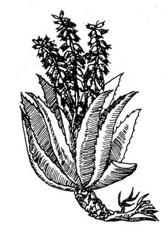

I grow my own treatment for minor, burns on a kitchen windowsill where it's always fresh and ready for emergencies. This living remedy, Aloe vera, is also a great plant to have around for scrapes or rashes and, as it turns out, many other ailments too.
The Aloe vera cure is not an old wives fantasy. Its healing qualities are medically recognized and many creams, ointments, and cosmetics made from its juices are sold in this country and all over the world. Still, it's less expensive-and more effective-to grow your own!
The plant's secret is the clear jelly stored inside its thick succulent leaves a juice which forms a protective coating over a cut, burn, or abrasion and so promotes healing. Best of all, this natural ointment needs no processing to be effective. Just break off a leaf, slit it open, and smear the gel liberally on an affliction. Then keep the area moist to draw out the pain.
Unused portions of the healing greenery will stay fresh wrapped in plastic and stored in the refrigerator, where it will remain ready for repeat applications or for the next crisis that comes along. In cold weather a severed leaf also keeps well on a bathroom windowsill while a rash or pimple is being doctored.
Our first "burn plant" quickly fascinated our children. They saw me use its juice to treat minor mishaps with hot saucepans and became anxious to make the thick jelly work its magic for them, too. Soon, a scraped leg from a bicycle accident gave them the opportunity. I felt like a witch doctor as I slit a leaf lengthwise and carefully patted the gel on the abrasion but the victim claimed that the treatment worked wonders.
We've since relieved the pain and redness of sunburn, cleared up a persistant diaper rash, and healed assorted skin blemishes in the same way. Sometimes I've even taped a slice of Aloe very directly to an affliction to keep the injury moist with its healing jelly.
Some experts say that such ailments should be treated with leaves at least one foot long, since only mature Aloe vera foliage possesses healing qualities. I've used smaller shoots, however, with good, results but have noticed that larger, older spears do have a stronger odor and yellowish rather than clear jelly. No doubt these are signs of "bigger medicine".
Our few experiments with Aloe vera have explored only its most common uses. I understand, though, that this remarkable plant (now under scientific investigation for its beneficial effects on Xray and other radiation burns) has been known over the centuries for a variety of healing powers.
Along the Texas - Mexico border, for instance, old timers will clean quite a large wound with antiseptic and then bandage a cut Aloe vera leaf to it, just as the Indians did. Another leaf is applied when the dressing is changed. Folks in those parts put the gel on the skin to protect against insect bites or to relieve itching, too.
I've also heard that Mexican women use the plant cosmetically by rubbing the leaves on their faces to prevent wrinkles and the men use it as a shampoo to prevent baldness and graying. The thick juice is massaged into the hair and scalp which absorb it within a few hours-and left on overnight. The next morning, when the dried gel is washed off (no soap is necessary) lo, the hair is silky, manageable, and supposedly more luxuriant than before!
The internal benefits of Aloe vera are supposed to be just as amazing. The plant is said to improve the digestion and to relieve ulcers. Some people consider it a laxative, while others attribute that effect to its digestive qualities (which normalize the system and induce regularity). The juice is also prescribed for arthritis and rheumatism. To test any of these claims, steep the cut foliage in water or chew pieces of the fresh leaf.
Those who keep Aloe vera on their windowsills may not be used to thinking of it as an outdoor species (except. in its native tropics). In southern Florida and Texas, however, the plaid is often used in landscaping and grows so large that a single mature le at weighs over a pound. Even in if), North, a potted specimen will thrive t outside during the summer if it's protected from the full sun (yes, it sunburns!). The plant can be moved out doors simply by submerging its pot in the earth up to the rim but will grow much faster and larger if unspotted and planted in open ground Summer rains will do the Aloe vera good if it's kept warm and well drained the foliage, however, will rot in cold, damp places.
During the fall, of course, northern gardeners should repot their Aloe veras in good garden soil fortified with a bit of limestone and bring them indoors Don't water the plants for 24 hours after the move.
Keep your windowsill Aloe vera on the dry side, give it a light dose of liquid fertilizer now and then, and remember to mist the leaves with tepid' water occasionally. So cared for, the green first aid kit will stay healthy and handsome and always ready to treat your mirror accidents and ailments.
|
 |
|
|